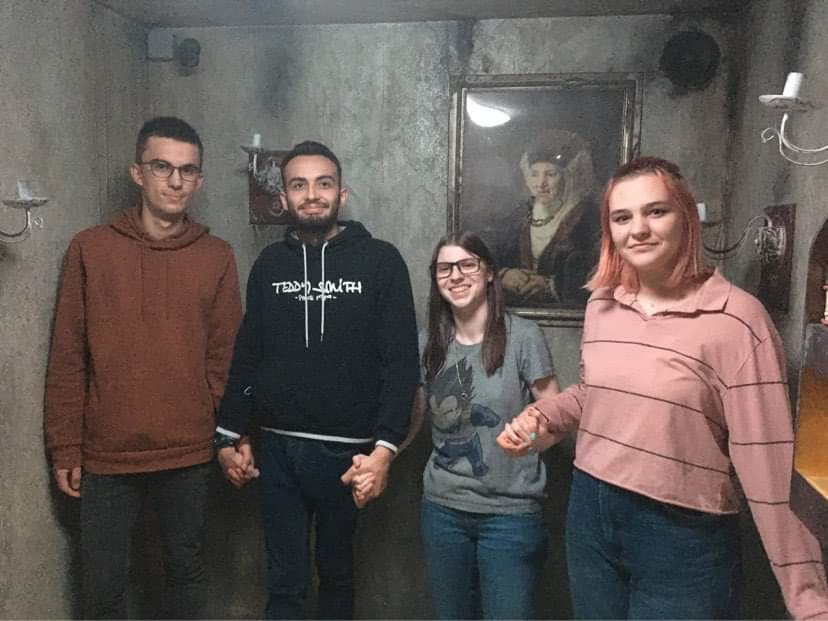

Ce matin, une grande fête a été organisée pour les individus qui nous ont sauvés de notre perte. Ces mystérieux enquêteurs ont réussi ce que nous pensiions tous impossible : ils ont rétabli l'ordre sur internet. Le monde entier leur doit tout, ils refusent cependant de faire savoir qui ils sont.
Dominique Trespoey, illustre expert en technologie internet et multimédia s'est exprimé sur le sujet : "Ce sont tous simplement des héros, ils ont remis en ordre internet, non sans aide, certes, mais tout de même ! Ils nous ont permis de retrouver les travaux de Hedy Lamarr, un véritable trésor pour le monde".
Maintenant que les travaux de Hedy Lamarr ont été retrouvés, nous allons pouvoir continuer d'en parler et d'honorer sa mémoire. En effet, elle a marqué l'histoire scientifique des télécommunications en inventant, en collaboration avec le compositeur George Antheil, un moyen de coder des transmissions (étalement de spectre par saut de fréquence). Il s'agit d'un principe de transmission toujours utilisé pour le positionnement par satellites (GPS, etc.), les liaisons chiffrées militaires ou dans certaines techniques Wi-Fi.
 Harleem Dry
Harleem Dry
Accueil > Actualités > Technologie
Le retour à la vie normale : "Sans eux, nous serions perdus ! Assurons nous que cet événement ne se reproduise plus jamais ".
Par Judith Duvalois
Publié le 22/01/2022 à 14:00
Dominique Trespoey, expert en technologie et multimédia
Merci pour votre participation !

Encore félicitations d'avoir réussi !

Voici l'équipe qui a créé ce magnifique site.